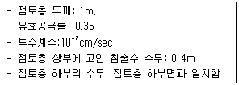
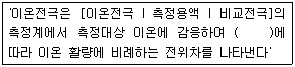

1과목: 폐기물 개론
1. 밀도가 0.45t/m3인 폐기물을 매립하기 위해 밀도를 0.85t/m3 으로 압축하였다면 압축비는?
2. 쓰레기 조사에서 전수조사의 장점과 관계없는 내용은?
3. 투입량이 1ton/hr이고 회수량이 600kg/hr(그 중 회수대상물질은 500kg/hr)이며 제거량은 400kg/hr(그 중 회수대상물질은 100kg/hr)일 때 회수율(%)은? (단, Rietema식 적용)
4. 하수처리장에서 발생되는 슬러지와 비교하여 분뇨의 특성이 아닌 것은?
5. 다음 중 폐기물의 관거(pipeline)를 이용한 수거 방식에 관한 설명으로 옳지 않은 것은?
6. 폐기물의 함수율은 25%이고, 건조기준으로 원소성분 및 열량계를 이용한 열량은 다음과 같다. 폐기물의 저위 발열량은? (단, 화학적 조성분석치- 수소: 18%, 고위발열량: 2800Kcal/kg)
7. 어느 쓰레기의 입도분석결과 입도 누적곡선상의 10%, 30%, 60%, 80%의 입경이 각각 0.5mm, 1.0mm, 1.5mm, 2.0mm이었다면 균등계수(Uc)는?
8. 다음 유해폐기물의 처리기술 중 미생물로 분해되기 어려운 물질이나 활성탄을 이용하기에는 농도가 너무 높은 물질등에 대하여 적합한 방법은?
9. 다음 중 효과적인 수거노선 설정에 있어서 바람직하지 못한 것은?
10. 어느 동에서 1주일 동안 쓰레기 수거현황을 조사한 결과 다음과 같았다. 쓰레기 발생량 (㎏/cap·day)는?
11. 정해진 수거일에 맞추어 쓰레기 저장용기를 주인이 길가에 갖다 놓으면 수거차량이 용기를 비우고 빈 용기는 주인이 찾아가는 쓰레기 수거 형태는?
12. 청소상태의 평가법 중 서비스를 받는 사람들의 만족도를 설문조사하여 계산되는 지수의 약자로 맞는 것은?
13. 다음 중 적환장 선정시 고려해야 되는 사항과 거리가 먼것은?
14. 어떤시에서 발생되는 쓰레기의 성분 중 비가연성이 약 72.7%(중량비)를 차지하는 것으로 조사되었다. 지금 밀도 600kg/m3인 쓰레기 5m3 가 있을 때 가연성물질의 양(t )은? (단, 쓰레기는 가연성+비가연성)
15. 전과정평가(LCA)의 일반적 목적과 가장 거리가 먼 것은?
16. 돌, 코크스 등의 불투명한 것과 유리같은 투명한 것의 분리에 이용되는 방식인 광학선별에 관한 설명으로 틀린것은?
17. 고형물 함량이 38%인 500kg의 슬러지 케익을 건조상에서 건조시켜 함수율 44%의 케익으로 만들었을 때 감소된 무게는? (단, 슬러지 비중은 1.0)
18. 다음 기질(Substrate)중 혐기성 처리를 할 경우 슬러지 생산량이 가장 적게 생성되는 기질은? (단, SRT, 온도 조건 등은 모두 동일하다.)
19. 폐기물파쇄기 중 전단파쇄기에 관한 설명으로 틀린 것은?
20. 쓰레기 배출량을 추정하는 방법으로 시간만 고려하는 방법과 시간을 단순히 하나의 독립적인 종속인자로 고려하는 방법의 문제점을 보완할 수 있도록 고안된 것은?
2과목: 폐기물 처리 기술
21. 차단형 매립지에서 차수 설비에 쓰이는 재료중 투수율이 상대적으로 높고 불투수층을 균일하게 시공하기 쉽지않는 단점이 있는 반면에 침출수중의 오염물질 흡착능력이 우수한 장점이 있는 것은?
22. 고형물농도 60g/L인 슬러지를 하루에 10m3 탈수시키고자 한다. 엽상 여과시험에 의하면 소석회를 슬러지 중의 고형물에 대하여 30% 첨가한 때에 겉보기 여과속도는 10㎏ /m2ㆍhr이며 케익의 함수율은 80%이었다. 시험과 같이 조작한다면 슬러지를 탈수하는데 필요한 최소진공여과기 면적은? (단, 탈수기는 8시간/일 가동)
23. 거시적 경제성 평가를 통하여 폐기물관리체계를 최적화 할수 있는 컴퓨터 모델은?
24. 표면차수막과 비교한 연직차수막에 관한 설명으로 옳지 않은 것은?
25. 어느 수역에 유출된 유해물질이 초기 농도의 절반이 될 때까지 소요되는 시간은? (단, 유해물질의 1차 감소 속도상수는 0.069/hr 이다.)
26. 고화처리 방법 중 유기중합체법의 단점이라 볼 수 없는 것은?
27. 일반적으로 도시폐기물을 매립한지 1년후에 발생되는 침출수 성분과 2년후에 발생되는 침출수 성분을 비교한 내용으로 알맞지 않는 것은?
28. 생활폐기물 매립지가 정상상태에 도달했을 때 발생하는 가스중에 그 농도가 가장 낮은 것은?
29. 퇴비화 중요 영향인자인 C/N비에 관한 설명으로 잘못된 것은?
30. 고화처리된 폐기물내 유용한 폐기물 성분을 회수하여 다시 쓸 수도 있는 고화처리 방법은?
31. 슬러지 개량(Conditioning)에 대한 설명으로 옳지 않은 것은?
32. 고형화처리방법중 가장 흔히 사용되는 시멘트기초법의 장점에 해당하지 않는 것은?
33. COD/TOC < 2.0, BOD/COD < 0.1, COD는500mg/L 미만인 매립 연한 10년 이상된 곳에서 발생된 침출수의 처리공정의 효율성을 틀리게 나타낸 것은?
34. 유기성폐기물의 퇴비화과정중 고온단계에서 주된 역할을 담당하는 미생물은?
35. 토양자체내 광물질의 영향에 관한 내용으로 틀린 것은?
36. 다음 조건의 관리형 매립지에서 침출수의 통과 년수는?

37. 매일 평균 100t의 쓰레기를 배출하는 도시가 있다. 매립지의 평균 매립 두께를 5m, 매립밀도를 0.8t/m3로 가정할 때 향후 5년간(1년은 360일 가정)의 쓰레기 매립을 위한 최소 매립지 면적은? (단, 복토,침하,진입로,기타시설 등은 고려치 않는다)
38. 매립지의 표면 총면적은 35㎞2이고 년간 평균 강수량이 2200mm가 될 때 그 매립지의 유출률이 0.5이었다고 한다. 이 때 침출수의 일 평균처리 계획수량으로 가장 적절한 것은?(단, 강우강도 대신에 평균강수량으로 계산하시오.)
39. 토양세척시 오염물질의 제거과정에 대한 설명으로 옳지 않은 것은?(단, 기술내용은 (오염물질의 결합형태 - 탈착 원리 -분리된 오염물질)의 순이다.)
40. 함수율이 90%인 슬러지의 겉보기 비중이 1.02이었다. 이 슬러지를 진공여과기로 탈수하여 함수율이 60%인 슬러지를 얻었다면 이 슬러지가 갖는 겉보기 비중은? (단, 물의 비중은 1.0으로 한다)
3과목: 폐기물 소각 및 열회수
41. 어떤 폐기물의 원소조성이 다음과 같을 때 이론공기량은? (단, 가연분:80%(C=45%, H=10%, O=40%, S=5%),수분=10%, 회분=10%)
42. 유동상 소각로의 장점이 아닌 것은?
43. 소각 연소과정에서 발생하는 다이옥신류를 연소가스 처리시설에서 저감시키고자 한다. 다이옥신류 저감를 위한 최적의 연소가스 처리시설 조합 구성은?
44. 폐기물 연소후 배출되는 배기가스의 염화수소 농도가 482ppm이고, 배기가스 부피가 5,811Sm3/hr 일 때 배기가스내 염화수소를 Ca(OH)2로 처리시 필요한 Ca(OH)2량은? (단, Ca원자량:40, 반응율은 100%로 한다.)
45. 반응속도가 빠르기 때문에 폐기물의 수분함량이 변화해도 큰 무리 없이 운전될 수 있는 장점이 있으나 열손실이 크고 운전이 까다로운 열분해 장치로 가장 적절한 것은?
46. 굴뚝에 설치되며 보일러 전열면을 통하여 연소가스의 여열로 보일러 급수를 예열함으로서 보일러효율을 높이는 열교환 장치는?
47. 소각과정에서 발생하는 연소가스 냉각방식의 종류와 가장 거리가 먼 것은?
48. 고위발열량이 17,000kcal/Sm3인 에탄(C2H6)을 연소시킬 때 이론 연소온도(℃)는? (단, 이론 연소가스량 42m3/Sm3이며, 연소가스의 정압비열은 0.63kcal/Sm3·℃, 기준온도는 15℃, 공기는 예열하지 않으며, 연소가스는 해리되지 않음)
49. 다음의 집진장치 중 압력손실이 가장 큰 것은?
50. 연료중의 산소가 결합수의 상태로 있기 때문에 전수소에서 연소에 이용되지 않는 수소분을 공제한 수소를 무엇이라 하는가?
51. 운전문제와 시설비를 고려할 때 일반적인 소각시설의 연소실 최소 규모는 60ton/day이다. 화격자(grate)의 폐기물 부하율을 300kg/m2·hr로 설계시 최소한의 화격자 면적은 몇 m2인가?
52. 고체연료의 연소형태로 적당하지 않은 것은?
53. 연소가스의 체류시간은 연소실내부온도가 850℃ 이상으로 유지되는 상태에서 폐기물소각량에 따라 달라진다. 다음중 잘못된 것은?
54. 프로판(C3H8)과 부탄(C4H10)이 60%∶40%의 용적비로 혼합된 기체 1Nm3이 완전연소될 때의 CO2 발생량(Nm3)은?
55. 화격자의 부하량과 발열량이 맞게 짝지어진 것은?
56. NO 400ppm을 함유한 연소가스 300,000 Sm3/hr을 암모니아를 환원제로 하는 선택접촉환원법으로 처리하고자 한다. NH3의 반응율을 91%로 할 때 필요한 NH3양(kg/hr)은? [ 4NO + 4NH3 + O2 → 4N2 + 6H2O ] (단, 기타조건은 고려하지 않음)
57. 석탄의 탄화도가 증가하면 증가하는 것이 아닌 것은?
58. 다음은 쓰레기 소각로에서 다이옥신류의 배출 경로를 설명한 것이다. 옳지 않은 것은?
59. 액화 프로판(LPG) 500kg 용량의 용기를 기화시켜 5Nm3/hr로 연소시킨다면 실제 사용시간(hr)은? (단, 프로판의 분자식은 C3H8이며 전량 기화됨)
60. 어느 폐기물을 원소분석하여 C, H, O, N, S의 함량을 산정 하였다. 이 중 열량을 갖는 성분이 아닌 것은?
4과목: 폐기물 공정시험기준(방법)
61. 가스크로마토그래피법에서 유기질소 화합물 및 유기인 화합물을 선택적으로 검출할 수 있는 검출기는?
62. 용출시험법중 시료액의 조제에 관한 설명으로 옳은 것은?
63. 시료의 전처리 방법에 관한 설명으로 옳지 않은 것은?
64. 반고상 또는 고상폐기물의 pH 측정방법으로 가장 적절한 것은?
65. 시료의 조제방법에 관한 설명으로 옳지 않은 것은?
66. 대상폐기물의 양(단위: TON)과 채취시료의 최소 수를 알맞게 짝지은 것은?
67. 흡광광도법(디티존법)에 의한 납의 측정시료에 비스무스(Bi)가 공존하면 시안화칼륨 용액으로 수회 씻어도 무색이 되지 않는다. 이 때 납과 비스무스를 분리하기 위해 추출된 사염화탄소층에 가해주는 시약으로 적절한 것은?
68. 기름성분을 노말헥산추출시험방법에 따라 정량할 때 분석 시료의 pH 범위는?
69. 다음은 이온전극법에 관한 설명이다. ( )에 알맞는 내용은?

70. 수분 측정시 사용하는 평량병 또는 증발접시(하부면적이 넓은 것)에 넣는 시료양의 기준으로 적합한 것은?
71. 다음중 폐기물공정시험방법에서 규정한 용어의 설명 중 올바른 것은?
72. 흡광광도 분석장치의 흡수셀에 관한 설명으로 옳지 않은 것은?
73. PCB 정량시 알칼리 분해를 하여도 헥산층에 유분이 존재할 경우, 실리카겔컬럼으로 정제하기 전에 유분을 제거하는 방법은? (단, 용출액중의 PCB분석, 가스크로마토그래피법)
74. 총칙에서 규정하고 있는 용기에 대한 설명으로 가장 옳은 것은?
75. 용출시험방법의 용출조작에 관한 설명으로 적당하지 않은 것은?
76. 강열감량 및 유기물 함량 측정방법에 대한 설명으로 가장 옳은 것은?
77. 유기인 시험법에서 가스크로마토그래피 칼럼의 온도조절범위로 가장 적절한 것은?
78. 시료 중 수분함량 및 고형물함량을 정량하고자 실험한 결과 다음과 같은 결과를 얻었다. 수분함량 및 고형물 함량은 각각 얼마인가?(단, 증발접시의 순무게(W1) = 245g, 시료를 넣은 후 증발접시의 무게(W2) = 260g, 건조 후 증발접시의 무게(W3) = 250g이었다.)
79. 가스크로마토그래피법에서의 정량법과 가장 거리가 먼것은?
80. 원자흡광광도법에서 시료용액의 점성이나 표면장력 등의 영향에 의하여 일어나는 간섭을 무엇이라 하는가?
5과목: 폐기물 관계 법규
81. 매립시설의 검사기관과 거리가 먼 것은?
82. 영업정지처분에 갈음하여 부과할 수 있는 과징금의 최대 액수는?
83. 폐기물 처리시설중 탈수시설은 수분함량을 몇 % 이하로 탈수할 수 있는 시설이어야 하는가?
84. 청정지역내 관리형매립시설에서 발생되는 침출수 성분 중 수은함유량(mg/L)의 배출허용기준은?
85. 주변지역 영향 조사대상 폐기물처리시설 기준으로 적절한 것은?
86. 폐기물 처리업의 업종 구분으로 틀린 것은?
87. 폐기물발생억제지침 준수의무대상 배출자의 규모기준으로 적절한 것은?
88. 폐기물재활용신고자가 시·도지사로부터 승인을 얻은 임시 보관시설에 폐전주를 보관하는 경우의 승인 기준을 나열한 것이다. 알맞는 것은?
89. 폐기물 중간처리시설중 소각시설이라 볼 수 없는 것은?
90. 지정 폐기물에 관한 설명으로 알맞지 않은 것은?
91. 폐기물처리담당자등이 이수하여야 하는 교육과정명과 가장 거리가 먼 것은?
92. 영업정지기간 중에 영업을 한 자에 대한 벌칙기준으로 알맞는 것은?
93. 폐기물의 처리명령대상이 되는 조업중단기간은? (단, 동물성 잔재물 및 감염성폐기물중 조직물류 등 부패, 변질의 우려가 있는 폐기물의 경우)
94. 폐기물관리법상 '재활용' 범위와 가장 거리가 먼 것은?
95. 시간당 처리능력이 2톤미만 25킬로그램 이상인 소각시설 (감염성폐기물소각시설 및 시간당 처리능력이 2톤 이상인 생활폐기물 소각시설을 제외)의 다이옥신 배출기준은? (단, 신설시설인 경우, 단위 ng-TEQ/Nm3)
96. 다음중 폐기물관리법상 재활용으로 인정되는 에너지 회수 기준으로 적합하지 않은 것은?
97. 관리형 매립시설에서 발생되는 침출수의 BOD 배출허용기준은 몇 mg/L이하 인가?(단, '가'지역 기준)
98. 감염성폐기물의 수집, 운반에 관한 내용으로 틀린 것은?
99. 폐기물처리시설중 음식물류 폐기물처리시설의 기술관리인의 자격기준으로 틀린 것은?
100. 폐기물관리종합계획에 포함되어야 할 사항과 가장 거리가 먼 것은?